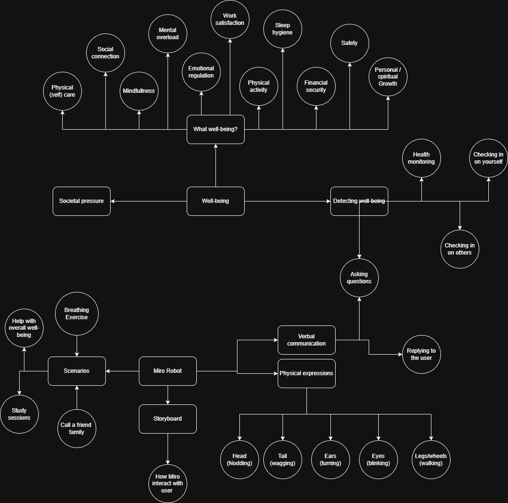

Portfolio showcasing my work in interaction design, with a focus on Social Robot Design. This includes both individual and group projects, with more to be added over time.
Exploring how technology — especially social robots — can be designed to support meaningful human experiences in domains like wellbeing, education, and healthcare.
Personal
Hi! I'm Liz van Ginderen, a student at the University of Twente with a growing interest in the intersection of technology and human experience.
Since humans are getting more and more intertwined with technology every day. I find it crucial to attempt to actively understand and design the role that these products embody in our everyday life, and in what ways this can be done more meaningfully and efficiently.
I'm fascinated by how technology can be designed to genuinely connect with people and support people in their daily life. Specifically, the domains of healthcare and education spark my interest greatly, which fits perfectly with this project about students and stress.
MSc Interaction Technologies (University of Twente) BSc Industrial Design Engineering (TU Delft)
I take great interest in the mix of Engineering and Arts, both in my professional life as well as for my personal enjoyment. I enjoy dance, photography, painting, going to concerts and galleries, as well as video editing, Illustrator, Python, Solidworks and general 3D printing.
Course Portfolio
This section documents my work for the Social Robot Design course. It includes multiple sessions exploring design tools, storytelling, and human-robot interaction.
The course focuses on designing meaningful human-robot interactions, using scenario-based design, experimentation, and critical reflection.
Group Work · Collaborators
Group Work · Session 1
For this course, our group invented a design case around the question: how can we check on the wellbeing of students? After exploring multiple target groups — students aged 18–24, children aged 5–12, and the elderly — we chose to focus on university students (18–24) and their overall wellbeing.
The platform we're designing for is the MiRo robot, a biomimetic animal-inspired robot developed by Consequential Robotics. MiRo can communicate verbally through a built-in speaker and express itself physically through an actuated head, ears, tail, eyes, and locomotion system.
Our scenarios range from general wellbeing check-ins using a curated set of wellbeing questions, to guided breathing exercises, study session support, and nudging students to reconnect with friends or family. Each scenario is designed to feel natural, warm, and non-intrusive for a student context.
The wellbeing questions we drew on cover dimensions like hydration, sleep, physical activity, social connection, emotional state, and sense of effectiveness — prompting small, actionable self-care steps rather than overwhelming the student.
"How can the MiRo robot be expanded upon to help students (ages 18–24) with their overall well-being?"
University students aged 18–24. A group facing unique pressures — academic load, social adjustment, irregular routines — and limited access to consistent wellbeing support.
From the User Innovation Toolkit · ugent.be
We selected three complementary methods from the User Innovation Toolkit that together let us imagine, visualise, and evaluate how MiRo could interact with students.
A process that enables you to envision a diversity of futures by distinguishing likely from less likely transitions and identifying the key determinants of each scenario.
For our case, scenario analysis lets us walk through concrete futures — a student sits down at their desk, MiRo initiates a check-in, questions are asked and answered. We can inhabit the student's perspective and reason through each moment. We also use it to analyse the situation before MiRo is introduced, making visible what problems actually exist in the student's daily routine.
A sequence of images that visualises how a persona uses a product or service — grounding abstract ideas in concrete, observable moments.
A storyboard brings MiRo to life: a panel showing MiRo's tail wagging as a student answers a question, or the robot guiding a breathing exercise with timed head movements. Where scenario analysis plays through the logic, storyboarding captures the emotion — and communicates our design intent to stakeholders far more vividly than words alone.
A visualisation of how a user moves through a product or service over time, mapping emotional highs and lows across different touchpoints.
Our most revealing application: creating two experience maps of the same scenario — one without MiRo, one with — and placing them side by side. This comparison shows exactly where MiRo adds emotional value and which moments in the student's day deserve the most thoughtful design attention.
Problem Space
A collaborative map of the problem space — covering the dimensions of wellbeing, how it might be detected, the scenarios MiRo can support, and the physical and verbal tools available to the robot.

System Components
MiRo's design is broken into three layers — what the robot does physically, how it behaves in software, and how it looks and feels to the student.
System Structure
MiRo's functions divide into two core channels — verbal and physical — both serving the overarching goal of detecting and responding to student wellbeing. These feed into a set of concrete scenarios.
MiRo uses its speaker to initiate check-ins, ask targeted wellbeing questions (covering hydration, sleep, activity, mood, and social connection), and guide students through structured scenarios like breathing exercises or study breaks. Dialogue can be Wizard-of-Oz'd or scripted.
MiRo's body language reinforces its verbal channel: nodding to acknowledge a student's response, wagging its tail to express warmth, turning its ears to signal attention, and moving towards the student to create physical presence and a sense of care.
Each scenario defines a specific interaction mode: a general check-in using the wellbeing question list, a structured breathing exercise with timed guidance, a study session break reminder, or a social nudge encouraging the student to call a friend or family member.
Wellbeing is detected primarily through conversation — the student self-reports. Optional physiological sensors (heart rate via touch) could add an objective layer. Over time, pattern tracking across check-ins would allow MiRo to surface trends rather than just respond to individual moments.
Potential Experimental Approach
We propose using theatre exercises — low-tech, human-enacted simulations — to rapidly test how students respond to MiRo interactions before committing to hardware or software development. A human plays the role of MiRo; students respond naturally.
A human plays MiRo initiating a basic wellbeing check-in. We observe: do students engage? Feel comfortable? Dismiss it? This establishes a baseline for whether the interaction feels welcome in a student context.
Comparing different interaction styles — proactive vs. reactive, gentle vs. direct, routine vs. spontaneous — each enacted and observed. The goal is to find what tone and timing feels most natural and trustworthy for students.
Testing different wellbeing question categories (hydration, sleep, social connection, physical activity, mood) to find which resonate most with students, and which feel irrelevant or too intrusive for a robot to ask.
Recording both verbal answers and facial expressions in response to specific prompts. This gives qualitative emotional data that supplements self-reported responses — capturing reactions students may not consciously articulate.
Presentation